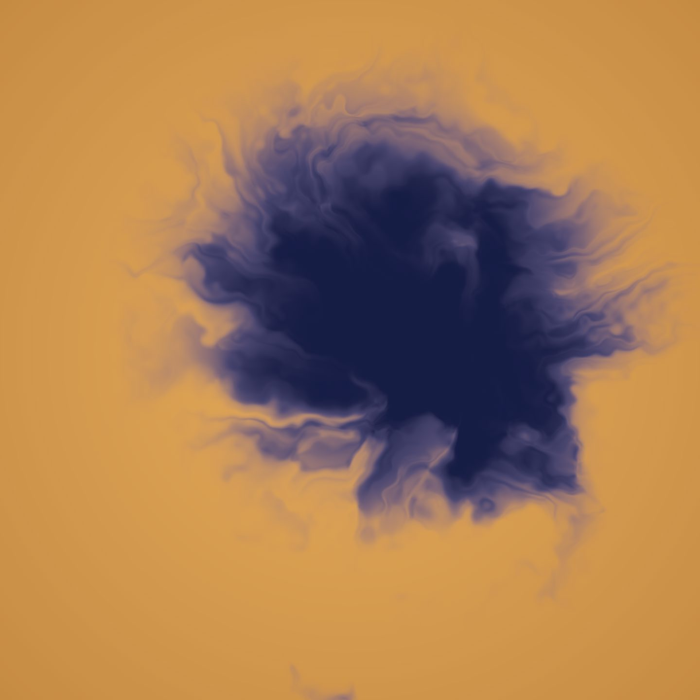
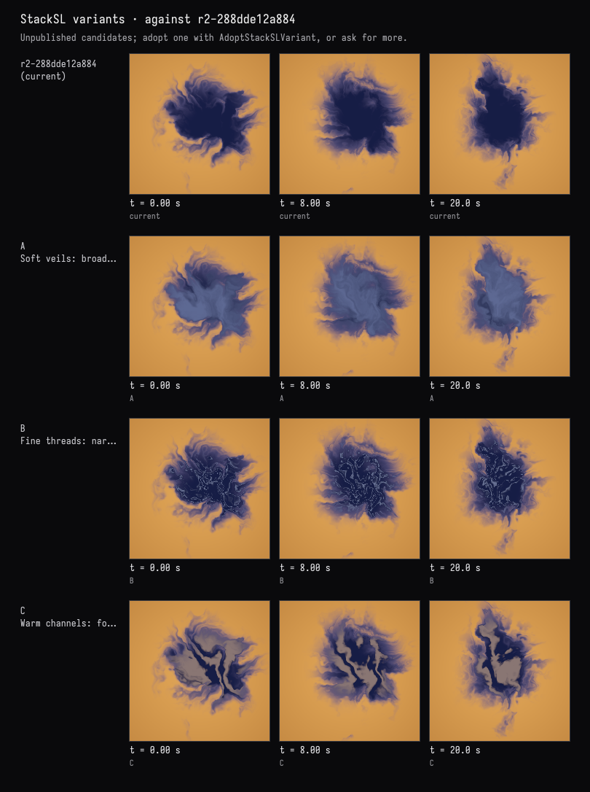

Field · AI4 / Ink in amber water / turn 02
Three ways to give it structure
The recorded exchange: the request, the tool activity, every image the tools returned to the model, and its reply. Expand tool activity to read the steps; open an image to see it full size.
You
The indigo body reads heavy and flat in the middle. Could you show me a few different ways to give it internal structure — lighter veils or threads inside the ink — so I can pick one?
Tool activity · 5 steps
Starting AI conversation
InspectStackSLStudy finished (3 ms)
CaptureRenderWindowRequest finished (43 ms)
TryStackSLVariants finished (2203 ms)
Completed


AI4 · gpt-6-astra / openai
Three checked previews are shown above; the live version is unchanged.
- A — Soft veils: smoky blue layers reveal broad folds inside the ink. Softest and most watery, though it lightens much of the center.
- B — Fine threads: delicate pale-blue filaments weave through the interior, preserving the deep indigo body. Most detailed.
- C — Warm channels: wider, warm lilac ribbons divide the ink into dark pools. Bolder and more marbled.
All three preserve the original outline and slow, in-place evolution, previewed at 0, 8, and 20 seconds.
My pick is A for softness, or B to retain the ink’s depth. Which would you like to use or refine?